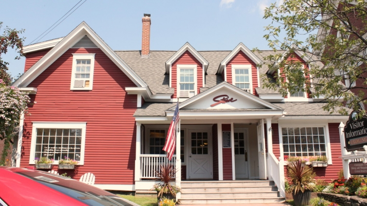
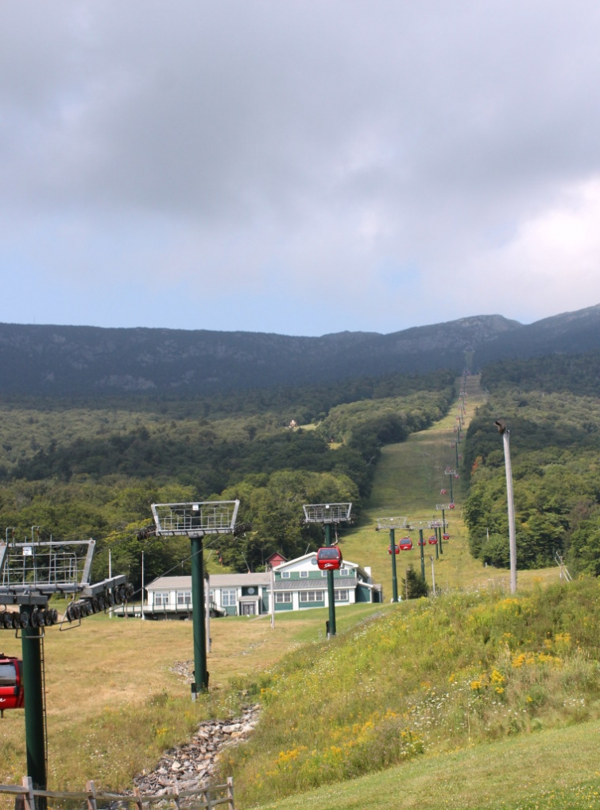

.png)
.PNG)
.PNG)
.PNG)
.PNG)
.PNG)
.JPG)
.JPG)
.PNG)
.PNG)


Happy Weekend! Today we are beginning our drive south towards home, but that does not mean we are through wandering. Goodness no! We are exploring two towns in the beautiful state of Vermont before we take the highways back to New Haven, Connecticut. Our first adventure leads us here…
to Smugglers Notch State Park outside of Stowe. If you want a sense of how it feels to drive through parts of the park, take a look at this video by Vermontology.
As we come back towards town, we spy this…

In case you didn’t know, Stowe is a major winter destination with dozens of activities in the snow…especially skiing. Some of their winter ski lifts operate in the summer to offer visitors a ride to the top for amazing views. We did not take advantage of this because of our budget, and this was my biggest regret of the whole trip. 🙁 If you go, be sure to include this in your activities.
Driving on into the town of Stowe, you find streets with charming shops.
 And of course we have to go in the coffee shop. 🙂
And of course we have to go in the coffee shop. 🙂
Right next door is the Butler House.
Even the realty company has a pretty building! 🙂
My favorite shop is Juniper, and it has just recently opened there.
Don’t you just love all the flowers?
Located down a little side street from Black Cap Coffee, Juniper carries cards, anything paper, and gifts.
I want you to come inside and see some of the goodies!
Here is a closer look at some of the cute items on that table there. 🙂
Our son purchases some postcards, and then it’s time to say goodbye to Juniper and to Stowe.
(But I want to be sure and visit it again when we return to Vermont for another trip.)
We get back in the car, and we are off to the next town, Waterbury.
But before we reach it, our son has us stop here.
Pete’s Greens is an organic farm, and this is one of their farmer’s markets. It is near the Cabot Cheese Outlet, so you could do some serious eating in the area! (Our son is shopping for one of Pete’s t-shirts.)
We purchase a few items, and then continue on down the road to Waterbury.
Waterbury has a different feel to me, but maybe I’m just not seeing all of the town. Stowe seems more family oriented, while Waterbury seems to be targeted to a younger crowd with a BIG emphasis on craft beer.
Even our lunch location is a brew pub.
Prohibition Pig
Here is part of our lunch.
(Love that Coke in a bottle. 🙂 )
And even though that part of town does not seem very family oriented, there is one part of Waterbury that most assuredly is…
Ben and Jerry’s. 🙂
Of course we have to make a stop there if we are in Waterbury!
My husband and I both have some kind of coffee flavor. (They do not carry my favorite – Coffee Heath Bar Crunch. 🙁 ) My son has a chocolate something…?? Not sure about his.It is all delicious, and we torture our son by making him oblige the traditional tourist photo-op there. 🙂
And that is the sweet ending of the Vermont portion of the road trip.
The next leg of our adventure takes us back to the Study Hotel in New Haven, Connecticut. (Remember it?) We’ll be looking around the city of New Haven and the campus of Yale in the next post (hopefully this weekend!)

And then you can finally see the before-and-after of our son’s apartment there early next week. 🙂
Stay tuned!
Until next time…


.PNG)
I love going on your virtual road trips, Kelly.
Waterbury is a college town so it definitely has a different vibe from Stowe. It’s interesting that you picked that up in the summer when it probably is quieter than usual.
———————————————————————–
Oh, I forgot it was a college town. That certainly does make a difference in your target audience in a place when you want to draw in business. That makes more sense to me now. Thanks for pointing that out Christi!
Kelly
Gorgeous I love that you include so many links in your blog and that youtube video of the drive was so great It really make you feel like you were there. I loved getting to see all the veggies that was so beautiful Thanks again for all your hard work.
———————————————————————
I am glad that you are enjoying all the road trip posts! Thank you for all your kind comments Charissa!
Kelly
That was fun! I can’t wait to see what is next!
Hi Kelly!
I love this post! Thank you for sharing your trip to Vermont with all of us. I have always wanted to visit the state. Juniper looks like my kind of store as well.
Kelly, I am loving your trip!! Vermont is one of my favorite places. My brother in law lived in Bennington and we got to visit him there about ten years ago. New England is on my Bucket List!!
Kelly,
This is quite a quaint road trip we are taking. I would have had to have bought at cute green and turquoise tea towel at Juniper. The best part of a road trip is usually the food. I would have loved the Ben and Jerry’s ice cream stop. My daughter loves Ben and Jerry’s! Thanks for sharing! Take care.
What a fun road trip this has been! 😉 I love to stop in little towns like this and eat at local dives. The buildings are so cute and I would have loved Juniper too. I’m looking forward to the Yale tour. Love a college campus tour, especially older ones with so much history and great architecture. 🙂
Kelly, this is just such a wonderful excursion for you all! My sister in NY is attempting to move up there as soon as she sells her house. Her youngest is a freshman at University of Vermont and loving it. They have been looking and praying for that opportunity to move to some land and a great house! From reading your post today I feel like was just up there with her 🙂
Thanks for all the photos and suggestions – you do take such care with your posts and have a great eye for the details!
Kelly,
I was really impressed by the flowers. I would have guessed you visited in the spring from the look of all of the blooms. I can spend hours in little shops, especially a great card/stationary/gift shop.
I love coffee ice cream. I’ll have to look for that Ben & Jerry’s flavor…yummy.
This has been fun. Thank you.
xo,
Karen
Kelly, I have enjoyed these trips and pictures so much. This trip to New England is on my bucket list when my husband retires. Are these posts on your pinterest board? I need to remember these places when I get to go someday. Tks so much for sharing!
I love the General Store, coffee shop and that red truck. Stowe looks like so quaint and I wish our town could look like that.
Love, love the posts this trip. The Northeast has always been a destination wish, especially Vermont. I just love the name. Also, ancient family members are from MA and Nantucket. Did you ever post pics of Nantucket, Kelly? Don’t think I’ll ever get there, but would love to hit Maine for some lobster at the end of July, festival time. Oh, well, if I’m not able to make it, your posts are the next best thing.
What beautiful towns! Loved all of it!
Kelly, this is just too much fun. I love Vermont. Enjoying each stop you make and now I have to look up Juniper. Have been wondering if you would get to Ben and Jerry’s. Stopped there many times over the years, done the tour, and afterwards filled up on pints of ‘seconds’ ice cream in which one might discover far too many (?!) large pieces of a particular ingredient (Coffee Heath Bar is my favourite as well). Enjoy your weekend!
Kelly, what a fun trip you all had! Quite a send off for your son and fun way to celebrate your retirement! I love stopping in little towns and checking our their shops and restaurants…and coffee shops, of course! Looking forward to the before and after of your son’s apartment. Warmly, Gracia
Quaint Vermont..beautiful. Your return trip looks like it was as enjoyable as the beginning. And Coke in a bottle..true comfort food, not to mention the treat of Ben and Jerry’s. Believe it or not, one of my favorite photos was the last one..beautiful architecture..what would the cost of constucting that building be today? Looking forward to touring Yale. Thanks for inclulding the beautiful flowers along the way too.
Happy Weekend,
Sherry